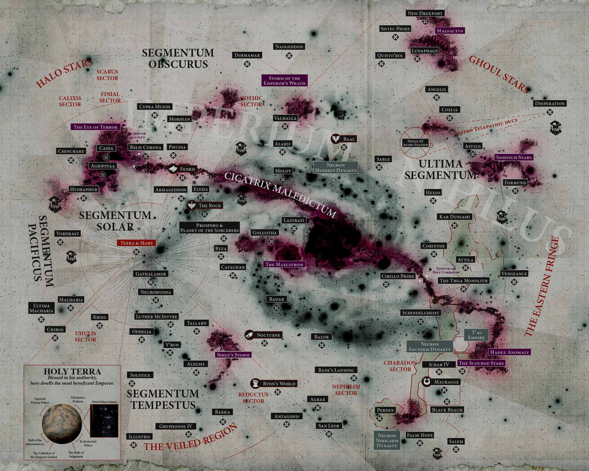

Image de fond : carte du dossier logo/galaxy-map.jpg. Balises et fiches : carte-data.js (positions en pixels sur l'image d'origine, faciles à ajuster).
Les mondes, secteurs et anomalies référencés par les archives. Cliquez une balise pour ouvrir sa fiche, ou tapez dans le terminal : SEARCH SUB-SECTOR AURELIA.

Image de fond : carte du dossier logo/galaxy-map.jpg. Balises et fiches : carte-data.js (positions en pixels sur l'image d'origine, faciles à ajuster).